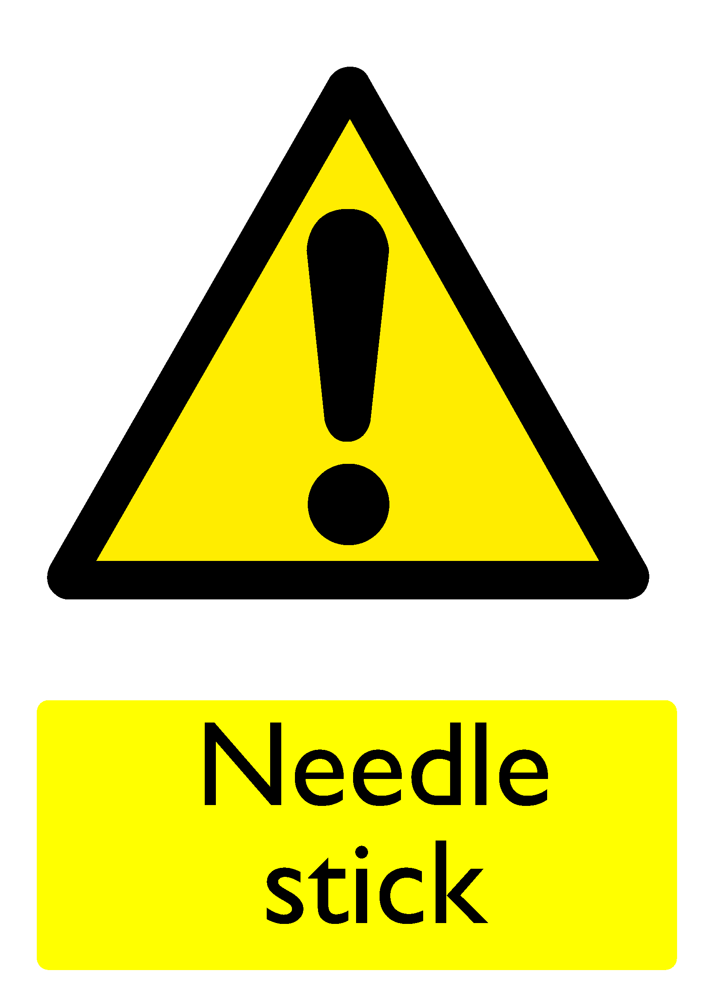

| Hazard ID (URI) |
https://bhdirectory.github.io/risk/hazard-register/needle-stick.html |
|---|---|
| Hazard Sign |  |
| Consequences | |
| Standard Control Measures | |
| Associated Risks | |
| Severity | High |
| Likelihood | Low |
| Risk Rating (Severity x Likelihood) | Medium |
| Related Hazards |
|
| Notes |